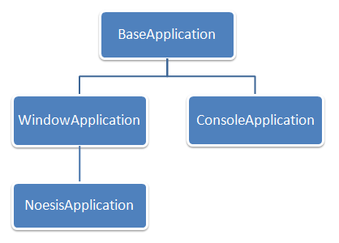

Application Framework
Noesis GUI can be embedded into an existing framework in a friendly and non intrusive way, but Noesis Engine also provides its own application framework to easily build up programs from scratch.
The application classes hierarchy that Noesis offers is show next:
Deriving your application class from any of the above will give you different benefits, so it's important to know the role and characteristics of each one to choose wisely depending on your application needs.
NOTE: The code shown at every class description is a trimmed down version for readability.
BaseApplication
class BaseApplication
{
public:
static BaseApplication* GetInstance();
NsBool Init(const Core::CommandLine& commandLine, Core::MemoryAllocator* memoryAllocator = 0);
void Shutdown();
protected:
virtual const NsChar* GetApplicationName() const;
virtual const NsChar* GetConfigPath() const;
virtual void RegisterComponents();
virtual void InitKernelSystems();
virtual void Configure();
virtual void Finalize();
};
This singleton class ensures that only one application instance is available at a time.
Classes deriving from BaseApplication are initialized calling the Init method and passing the application's command line, and optionally a memory allocator to redirect all the memory allocations requested by Noesis. The Init method doesn't raise any exception, but returns a success boolean value. The initializacion process does the next steps:
- Set the working directory to the location of the application executable.
- Load configuration files to store its values in memory (more on this subject later).
- Initialize kernel with the optional memory allocator.
The application can be closed calling the Shutdown method after a successful initialization.
There are some virtual methods that can be overridden by derived classes:
- GetApplicationName: returns the name of the application that is mainly used for debugging messages .
- GetConfigPath: gets the path where the kernel will search for configuration files, relative to the working directory. By default it's the working directory itself.
- InitKernelSystems: called to initialize needed kernel systems. By default, all registered kernel systems are initialized.
- Configure: called after system initialization. Empty by default.
- Finalize: called before system shutdown. Empty by default.
Initialization files
Are text files that stores sections, entries and values in a common .ini format. This files are used to modify specific application or engine values without the need to recompile the program. The BaseApplication searchs in the config path for two files with the name of the application executable followed by .ini and .local.ini. For example, for an Release.Core.Tester.exe executable, it will search for Tester.ini and Tester.local.ini files.
The first .ini file stores the default values for all the variables, and .local.ini file is intended to override any of these values. This is a "by agreement" behavior, but changes can be made by the user in any of the two files, with values from the later having precedence.
A .ini sample file:
[Core.MemoryManager]
TrackMemory = true
StoreCallStack = false
CallStackDepth = 10
;BreakOnId = 20
[Gui.SystemWindow]
Implementation = "Win32Window"
[Gui.UISystem]
ThemeResources = "Gui/Core/Themes/SimpleStyle.xaml"
[Gui.Core]
MultiSample = 8
[Drawing.VGL]
RenderingQuality = 2
ConsoleApplication
class ConsoleApplication: public BaseApplication
{
public:
NsInt Run();
virtual void Log(NsSize indentation, NsByte severity, NsUInt32 threadId, NsFloat64 timeStamp,
const NsChar* channel, const NsChar* scope, const NsChar* message) const;
protected:
virtual NsInt Exec() = 0;
};
Is intended for text based applications. Examples in Noesis are Core/Tester and Resource/BuildTool.
It provides a Run method to be called after initialization, redirecting log messages of the default channel to the console. The deriving classes have to implement the abstract method Exec that is called from inside Run.
WindowApplication
class WindowApplication: public BaseApplication
{
public:
NsInt Run();
void Quit(NsInt exitCode = 0);
const Ptr<ISystemWindow>& GetMainWindow() const;
protected:
virtual Ptr<ISystemWindow> CreateMainWindow() = 0;
virtual void Tick(NsFloat64 time, NsFloat32 deltaTime);
/// From Application
//@{
void Configure();
void Finalize();
//@}
};
This is a base class for applications that use native OS windows. In the current implementation only Win32 windows are supported right now.
When the application Configure method is called on startup, a main window has to be created, and this is done in the abstract CreateWindow method that has to be implemented by the deriving classes, returning an OS window encapsulated by the ISystemWindow interface. Currently the Win32Window class implements it supporting the Win32 platform, but other OS can be supported creating a window class that implements ISystemWindow.
The Run methods continuosly ticks the kernel systems to maintain them updated and query the OS application message loop, also calling the virtual Tick method in every iteration. The application can be destroyed by closing the main window from the OS, or from code calling the Quit method.
NoesisApplication
class NoesisApplication: public WindowApplication
{
public:
void SetApplicationFile(const NsChar* appFile);
const Ptr<Application>& GetApplication() const;
protected:
Ptr<Core::BaseComponent> LoadUI(const NsChar* fileName) const;
const Ptr<Window>& GetUIWindow() const;
/// From WindowApplication
//@{
void Tick(NsFloat64 time, NsFloat32 deltaTime);
Ptr<ISystemWindow> CreateMainWindow();
//@}
/// From Application
//@{
void Finalize();
//@}
};
Is a WindowApplication that uses Noesis Gui. Cognition is an example.
WindowApplication defines an unique xaml application file (usually it's the App.xaml file created from a Blend project) which has been serialized previously using the BuildTool application. When CreateMainWindow is called, the StartupUri window defined in the xaml file is instantiated, creating an OS window that is used by the WindowApplication message loop queries.
Note that the App.xaml file defines an Application derived class, but Application doesn't appear in the hierarchy classes explained here. This is because Application is a class in Gui/Core that implements the functionality of a xaml app, as described in the language reference (just like other xaml defined classes like Button, TextBox, etc...). The Application instance is also ticked continuosly by NoesisApplication.